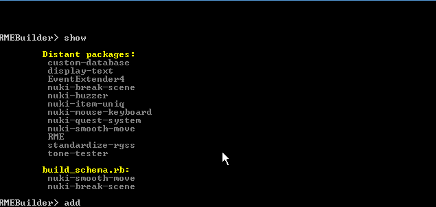
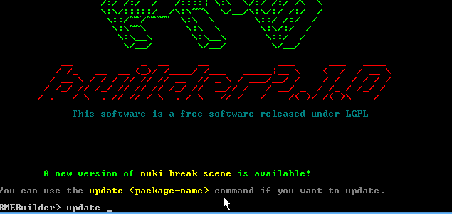
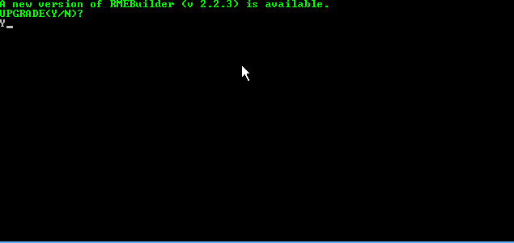

RMEBuilder is a tool for installing scripts in RPGMaker VXAce.
It makes dependency management easier. On top of the comfort it provides, RMEBuilder
is free software, licensed under LGPL.
RMEBuilder synchronizes via internet with the latest versions of scripts
in order to guarantee that they are always up-to-date (and cover all known bugs)!
Overview
The idea behind RMEBuilder is to allow script users to easily and quickly install scripts. Indeed, RMEBuilder is a tiny executable that permits the adding of scripts to one or several projects. Here is an example of a typical method of using RMEBuilder.
- Select a project
- Add (with commands) the script list for the project
- Start the project building routine
- Start working!
Downloading
RMEBuilder can be obtained really easily, just go to the page
Releases
and download the file RMEBuilder.zip.
Installing
In order for RMEBuilder to work perfectly, configuring your antivirus/firewall is sometimes necessary so that it lets RMEBuilder download files.
Installing RMEBuilder is very straightforward, just unzip
RMEBuilder.zip in the chosen folder (not necessarily
inside a RPGMaker project folder, you can use RMEBuilder to build
several projects at once.)
Normal use
First launch
To launch RMEBuilder, you simply need to click on
RMEBuilder.bat (which is a shortcut to launch the software).
Upon starting for the first time, the software will ask you to choose the target project.
Choosing a valid RPGMaker VXAce project is mandatory.
Once the software knows the target project, a command line device can be accessed.
Using it allows you to enter commands relating to project building.
You can switch target projects at any time by entering the target
command, which, on top of giving you the current target project path, allows you to change it.
Here is an example of an RMEBuilder first launch.
 Zoom in!
Zoom in!
Composition d'un schéma
Une fois qu'un projet est ciblé dans le logiciel, on peut désormais ajouter les
scripts que l'on veut dans son projet. Pour cela, on se sert de la commande
show qui affiche la liste des paquets disponibles sur le net.
La commande about nom-du-paquet permet de renvoyer les informations
(description, auteurs etc) relative à un paquet.
{kind=link}
Pour ajouter des paquets au projet, il suffit d'utiliser la commande
add nom-du-paquet. Cette commande aura pour effet d'ajouter un paquet
dans la liste des paquets à intégrer au projet.
La commande schema permet d'afficher la liste des paquets à installer.
{kind=link}
It is obvious that if RMEBuilder is closed, all scripts in the schema will be saved and will still be visible when you reopen it!
Moduler le schéma
Par défaut, lors de la phase de "compilation", que nous verrons un peu plus tard, les scripts sont installés par ordre d'ajout. Il est donc évidemment possible de changer cet ordre :
remove nom-du-paquet: supprime le paquet de la liste des paquets à compilermove nom-du-paquet up: monte le paquet référencé d'une placemove nom-du-paquet down: descend le paquet référencé d'une place
{kind=link}
Haha I made a typo in the Gif (mouwe instead of mouse, aha) :D sorry!
Compiling the project
Once your schema is, in your opinion, complete, you can compile your project.
Compiling in RMEBuilder consists in downloading the scripts currently in the schema
and assembling them in the Scripts.rvdata2 file.
Attention, avant de "compiler" votre projet, il est impératif de fermer votre projet dans RPGMaker. Vous pourrez l'ouvrir après, une fois la compilation exécutée.
 Agrandir !{kind=link}
Au lancement de la commande build, le logiciel va télécharger les scripts s'il ne les connait
pas, et va créer un fichier Scripts.rvdata2 qu'il va fusionner avec les scripts déjà existants.
Votre projet peut donc déjà contenir des scripts pré-installés.
À chaque fois que la commande build est appelée, les éléments construits par RMEBuilder
sont purgés. Donc si vous retirez, après une compilation, un élément de votre schéma (via la commande remove)
et que vous recompilez (build), les mises à jour auront bien été prises en compte.
Gestion des Assets
Il arrive parfois que lors de la compilation de votre projet RMEBuilder vous demande si vous désirez fusionner les assets. C'est lorsque le paquet propose des fichiers externes (des images ou une DLL par exemple). Lors de la première compilation avec un script requierrant des assets, il est généralement conseillé de répondre oui (Y). Par contre, lorsque le script a déjà été ajouté, il n'est pas nécéssaire de re-fusionner les assets. Imaginez par exemple qu'il s'agit d'image que vous avez déjà modifié, il serait dommage de perdre ces modifications!
A tout moment, vous pouvez récupérer les assets d'un paquet en utilisant la commande
get assets of package-name.
Mettre à jour des paquets
Au lancement de RMEBuilder, ce dernier vérifie s'il existe des mises à jour pour vos scripts installés. C'est très pratique pour rester au courant des ajouts dans les scripts :
 Agrandir !{kind=link}
Vous pouvez aussi vous servir de la commande check updates, qui vérifiera si des paquets ne sont pas à jour.
Une fois qu'un paquet est mis à jour, il est impératif de refaire un build, donc en fermant le projet RPGMaker
pour que la mise à jour soit prise en compte !
Dependency management
If a package depends on another package, it's not necessary to reference the latter in the schema.
When building the project (with the use of the build or build dev
commands), the application will download and install all dependencies. If a package with dependencies is removed from the schema,
the dependencies will be removed as well (unless they were explicitly added (add) to the schema).
Temporary compilation
The problem with RMEBuilder is that you have to close it after every modification.
In order to address this, it is possible to compile temporarily. Using the build dev
command will make a temporary file that, when the project is launched, will read the scripts from where they were downloaded.
This allows you to only use build dev (and so, close the RPGMaker project) when
adding or removing a file in the schema.
Package updates don't force a project rebuild. It's very convenient for often-updated scripts.
However, before distributing your project, executing a build is mandatory so that your project does not
rely on temporary files anymore!
Mettre à jour RMEBuilder
Quand une mise à jour de RMEBuilder est disponible, le logiciel vous prévient, il suffit de valider la mise à jour et le logiciel se met tout seul à jour.
 Agrandir !{kind=link}
Avant de diffuser son projet
Une fois que votre projet est fini, vous pouvez supprimer le fichier build_schema.rb (sans avoir oublié de faire
une dernière fois build, pour être sur que tous vos scripts sont installés) du répertoire du projet. Et il ne vous reste
plus qu'a crypter (ou pas) votre projet et le diffuser !
Pour les scripteurs
RMEBuilder n'est évidemment pas destiné à ne rester qu'un outil pour diffuser nos scripts. Nous espérons qu'il sera utilisé par un maximum pour partager facilement des scripts à travers le monde ! (étoiles dans les yeux)
Rendre un script accessible depuis RMEBuilder
Medium de publication
Pour qu'un script soit accessible depuis RMEBuilder, il est important de comprendre qu'il doit être disponible depuis le net. Pour cela, nous avons pris l'habitude d'utiliser Github, qui nous permet de versionner nos scripts, cependant, vous pouvez vous servir de Dropbox (même si Github est vraiment adapté à ça!).
Notion de paquet
Pour qu'un script soit compréhensible par RMEBuilder, il est important
que son anatomie soit décrite dans un fichier, qui devra toujours porter le nom package.rb
Exemple avec un paquet simple
Le paquet pris en exemple est le paquet nuki-break-scene, qui permet de créer facilement
un système de pause. Son répertoire Github se trouve ici.
L'anatomie du paquet est assez simple, script.rb est le script (logique!) et package.rb décrit
le paquet :
# Package description
Package.new(
name: 'nuki-break-scene',
version: vsn(1, 0, 0),
authors: {'Nuki' => 'xaviervdw@gmail.com'},
components: ['script.rb'],
description: 'Provide a little customizable scene for InGame\'s pause',
)
Package.
Ce paquet correspond au strict minimum.
name: correspond au nom du paquetversion: décrit la version (c'est grâce à cet argument qu'on peut décrire les mises à jour)authors: un hash avec comme clé l'auteur et comme valeur son courrielcomponents: une liste des fichiers, dans l'ordre, qui constituent le script. Leur chemin est relatif au fichierpackage.rbdescription: une petite description du paquet
Exemple avec plusieurs fichiers
Cette fois ci on se sert du paquet de RME. Comme vous pouvez le voir, il n'y a pas beaucoup de changements, si ce n'est qu'il y a plusieurs auteurs et plusieurs fichiers constituants :
# Package description
Package.new(
name: 'RME',
version: vsn(0, 0, 5),
authors: {
'Nuki' => 'xaviervdw@gmail.com',
'Grim' => 'grimfw@gmail.com',
'Raho' => '',
'Joke' => 'joke@biloucorp.com',
'Mspawn' => ''
},
components: [
'SDK.rb',
'SDK.Gui.rb',
'Database.rb',
'Internal.rb',
'EvEx.rb',
'Commands.rb',
'Incubator.rb',
'EE4Cmds.rb',
'Tools.rb',
'DocGenerator.rb',
'Doc.rb'
],
description: 'RME is a powerful tool to improve your RPGMaker VXAce experience!'
)
Exemple avec dépendances
Le script DisplayText
(visible ici)
requiert l'installation préalable du script StandardizeRGSS.
Il suffit de le spécifier dans un argument dependancies, qui prend
une liste des scripts dont dépendent le script en question :
# Package description
Package.new(
name: 'display-text',
version: vsn(1, 0, 0),
authors: {'Nuki' => 'xaviervdw@gmail.com'},
components: ['script.rb'],
description: 'Provide a full customisable text engine',
dependancies: ["standardize-rgss"]
)Exemple avec des Assets
Il arrive qu'un script soit compléter de fichiers complémentaires, des assets. Par exemple, une DLL
ou encore des images. Pour ça il suffit d'ajouter un paramètre assets
qui est un Hash dont la clé est l'url (relatif ou non) de la ressource et la valeur est
sa position dans le projet. Voici par exemple le fichier paquet du script "raho-useless", qui ne sert que
de démonstration aux assets :
# Package description
Package.new(
name: 'raho-useless',
version: vsn(1, 0, 0),
authors: {'Hyperaho' => ''},
components: ['script.rb'],
assets: {
'assets/raho1.png' => 'Graphics/Pictures/raho1.png',
'http://full.ouplo.com/f/12/AgkA.png' => 'Graphics/Pictures/raho2.png'
},
description: 'Epic script for Epic projects'
)
Attention ! N'oubliez pas que RMEBuilder se veut utilisé par un maximum
de personne, n'hésitez donc pas à préfixer vos assets pour éviter les collisions !
Par exemple, si je propose un menu qui utilise une image, ne pas hésiter à nommer l'image
nuki-menu-mon-image.png, pour garantir qu'elle n'écrase aucune image
(ou qu'elle ne soit écrasée par personne).
Soumettre son paquet comme un patch à RMEBuilder
La liste des paquets est un dépôt Github. Pour y contribuer, il suffit
simplement de "forker" ce projet.
Pour ajouter un paquet, il suffit de modifier la liste des paquets disponibles dans le fichier packages.rb.
En ajoutant une relation "nom du paquet" => "url du package.rb relatif".
Attention, il faut pointer vers un fichier brut. Pas vers une page html, pour Github il faut impérativement utiliser le lien raw pour que seul le contenu du fichier soit exporté (et non toute la page HTML).
Sur la sémantique des nom de paquet
Il n'y a pas de sémantique formellement fixée. Cependant, pour éviter des collisions de paquets, on propose de préfixer le nom d'un paquet par le pseudonyme de l'auteur. Si le paquet est un incontournable, il est possible de ne pas le préfixer. Cependant, nous nous réservons le droit de refuser une modifications de la liste des paquets, si un paquet en écrase un autre.
Le répertoire customPackages
Dans le répertoire RMEBuilder/customPackages, vous pouvez placer
vos scripts en production. Il permet de lire des paquet sans qu'ils soient déjà hebergés. Vous pouvez
donc créer des répertoires pour vos scripts en production dans ce répertoire et les travailler comme s'ils
étaient déjà publiés. Cela évite de devoir publier d'entrée de jeu un script non terminé.
De plus, avec la compilation via build dev, vous pouvez modifier votre
code depuis votre éditeur favori (emacs), sans devoir faire sans arrêt des copier-coller à la moindre modification.
Clonage de paquet existant
Pour une raison quelconque, on pourrait avoir envie de modifier un paquet déjà publié par quelqu'un d'autre,
dans RMEBuilder vous pouvez vous servir de la commande clone nom-du-paquer
et le paquet sera copié dans votre répertoire RMEBuilder/customPackages.
Un paquet présent dans RMEBuilder/customPackages sera toujours placé au détriment
d'un paquet externe dans la phase de construction, donc pour reprendre le paquet initial, il faut le supprimer du répertoire
RMEBuilder/customPackages ou alors utiliser la commande reclone nom-du-paquet
pour écraser la copie locale par la dernière version.
Conclusion
C'en est fini du tour de présentation de RMEBuilder, nous espérons qu'il sera réellement
utile et qu'il changera les habitudes d'installation des scripts pour les simplifier. Nous espérons aussi que
les scripteurs n'hésiteront pas à publier leurs scripts ! Plus on est de fous plus on rit :D
À BIENTÔT.